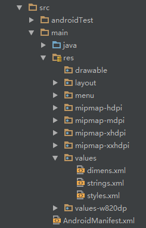
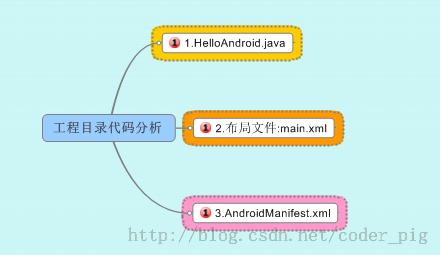
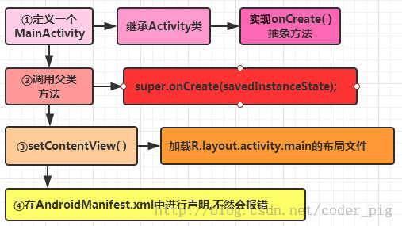

本節の引言：
これまでAndroid開発とは無関係に見えることをいろいろ話してきましたね。もちろん、今はそう見えるだけです。後で振り返ると分かります！さて、本節では、前に作成したHello Worldプロジェクトを入り口として、プロジェクト構造と、Androidにおけるリソースアクセスの2つの方法について理解していきましょう！以降のチュートリアルで使用するIDEはAndroid Studioです。数日前にGoogleが正式に、年末までに他のIDE開発環境のサポートを終了すると発表したからです！

1. プロジェクト構造の解析：
私たちが開発でほとんどの時間を費やすのは、以下の部分です：

次に、重要な部分について説明します：
- java：Javaコードを書く場所で、ビジネス機能はすべてここで実装されます
- res：画像、文字列、アニメーション、オーディオなどのさまざまなリソースファイルや、さまざまな形式のXMLファイルを格納する場所です
1. resリソースフォルダの紹介：
PS：これについて言うとresディレクトリ、またこれも挙げておきますassetsディレクトリ、ここにはありませんが、自分で作成できます。両者の違いは、前者（res）のすべてのリソースファイルがR.javaファイルに対応するリソースIDを生成するのに対し、後者（assets）は生成しないことです。前者はリソースIDを直接使用して対応するリソースにアクセスできますが、後者はAssetManagerを介してバイナリストリームの形式で読み取る必要があります！そうそう、このRファイルは辞書のようなもので、resの下の各リソースはここで一意のIDを生成します！
続いて、resリソースディレクトリの下の関連ディレクトリについて説明します：
PS:前述のmipmapディレクトリは、Eclipseには存在しません。Eclipseではすべてdrawableで始まります。実際には違いはほとんどありません。mipmapを使用すると、画像のスケーリングにおいて一定のパフォーマンス最適化が提供されるだけです。解像度が異なる場合、システムは画面解像度に応じてhdpi、mdpi、xmdpi、xxhdpiの下の対応する画像を選択します。そのため、他の人のAPKを解凍すると、上記のディレクトリに同じ名前の画像が4つのフォルダすべてに存在するのを見ることができます。サイズとピクセルが異なるだけです！もちろん、これは絶対のなものではありません。たとえば、すべての画像をdrawable-hdpiに置いた場合、携帯が本来ldpiフォルダの画像リソースを読み込むべきでも、ldpiにない場合は、hdpiの画像が読み込まれます！また、別のケースもあります：たとえばhdpi、mdpiディレクトリにはあるがldpiにはない場合、mdpiのリソースが読み込まれます！原則は、最も近い密度レベルを使用することです！また、Androidが画面密度に応じて異なるフォルダのリソースを読み込むのを禁止したい場合は、AndroidManifest.xmlファイルにandroid:anyDensity="false"フィールドを追加するだけで済みます！
1. まずは画像リソース：
- drawable：さまざまなビットマップファイル（.png、.jpg、.9png、.gifなど）を格納します。その他に、drawableタイプのXMLファイルも含まれる場合があります
- mipmap-hdpi：高解像度。通常、画像はここに置きます
- mipmap-mdpi：中解像度。対応する携帯が非常に古い場合を除き、ほとんど使われません
- mipmap-xhdpi：超高解像度。スマホの画面素材がどんどん良くなっているので、今後は徐々にここへ移行していくと思われます
- mipmap-xxhdpi：超超高解像度。これはハイエンド端末に見られます
2. 続いてレイアウトリソース：
- layout：このディレクトリにはレイアウトファイルが格納されます。また、特定の機種では画面適応を行います。たとえば480*320のような携帯の場合、別のレイアウト一式、つまりlayout-480x320のようなフォルダを作成します！
3. 次にメニューリソースについて説明します：
- menu：以前は物理メニューボタン（つまりmenuキー）がある携帯ではよく使われていましたが、今はあまり使われていません。メニュー項目に関連するリソースXMLはここに記述できます。Googleがメニューを置き換える新しいものを出すかどうかはわかりませんが〜
4. 次にvaluesディレクトリについて説明します：
- demens.xml：寸法リソースを定義します
- string.xml：文字列リソースを定義します
- styles.xml：スタイルリソースを定義します
- colors.xml：色リソースを定義します
- arrays.xml：配列リソースを定義します
- attrs.xml：カスタムコントロールを作成するときによく使われます。カスタムコントロールの属性です！
- themeはテーマファイルで、stylesと非常に似ていますが、アプリ全体のActivityまたは指定したActivityに作用し、一般的にはウィンドウの外観を変更します！JavaコードでsetThemeを使用するか、Androidmanifest.xmlの<application...>にtheme属性を追加することで使用できます！PS：このようなvaluesディレクトリを見たことがあるかもしれません：values-w820dp、values-v11など。前者のwはタブレット端末を表し、820dpは画面幅を表します。一方、v11のようなものはAPI（11）、つまりAndroid 3.0以降でのみ使用されることを表します！
5. 続いてこのrawディレクトリについて説明します：各種のネイティブリソース（オーディオ、ビデオ、一部のXMLファイルなど）を格納するために使用されます。openRawResource(int id)を使用してリソースのバイナリストリームを取得できます！実はAssetsとほぼ同じですが、ここのリソースはRファイルにリソースIDが生成されるだけです
6. 最後にアニメーションもあります。アニメーションには2種類あります：プロパティアニメーションとトゥイーンアニメーションです：
- animator：プロパティアニメーションのXMLファイルを格納します
- anim：トゥイーンアニメーションのXMLファイルを格納します
2. これらのリソースの使い方
うん、どんなリソースがあるか分かったので、次はその使い方を理解していきましょう：前に述べたように、すべてのリソースファイルはR.javaファイルにリソースIDが生成されます。このリソースIDを通じてリソースへのアクセスを完了できます。使用状況は2つあります：Javaコードでの使用とXMLコードでの使用です。
Javaコードでの使用：
Java 文字列：
txtName.setText(getResources().getText(R.string.name));
画像：
imgIcon.setBackgroundDrawableResource(R.drawable.icon);
色：
txtName.setTextColor(getResouces().getColor(R.color.red));
レイアウト：
setContentView(R.layout.main);
コントロール：
txtName = (TextView)findViewById(R.id.txt_name);
XMLコードでの使用：
@xxxを使用して取得できます。たとえば、ここでテキストと画像を取得します：
<TextView android:text="@string/hello_world" android:layout_width="wrap_content" android:layout_height="wrap_content" android:background = "@drawable/img_back"/>
2. 3つのファイルを詳しく理解する：
では、次にプロジェクト内の3つの重要なファイルを分析していきます：MainActivity.java、レイアウトファイル：activity_main、Android設定ファイル：AndroidManifest.xmlPS：画像の内容に少し差異があるかもしれません。図を作成する時間がなかったので、ご了承ください〜

MainActivity.java：
コードは以下のとおりです
package jay.com.example.firstapp;
import android.support.v7.app.AppCompatActivity;
import android.os.Bundle;
public class MainActivity extends AppCompatActivity {
@Override
protected void onCreate(Bundle savedInstanceState) {
super.onCreate(savedInstanceState);
setContentView(R.layout.activity_main);
}
}
コード分析：

レイアウトファイル：activity_main.xml：
コードは以下のとおりです：
<RelativeLayout xmlns:android="http://schemas.android.com/apk/res/android"
xmlns:tools="http://schemas.android.com/tools"
android:layout_width="match_parent"
android:layout_height="match_parent"
tools:context=".MainActivity">
<TextView
android:layout_width="wrap_content"
android:layout_height="wrap_content"
android:text="@string/hello_world" />
</RelativeLayout>
コード分析：
LinearLayout線形レイアウトを定義しました。XML名前空間で使用する必要のあるアーキテクチャを定義します。これは①に由来します

AndroidManifest.xml設定ファイル：
コードは以下のとおりです：
<?xml version="1.0" encoding="utf-8"?>
<manifest xmlns:android="http://schemas.android.com/apk/res/android"
package="jay.com.example.firstapp" >
<application
android:allowBackup="true"
android:icon="@mipmap/ic_launcher"
android:label="@string/app_name"
android:theme="@style/AppTheme" >
<activity
android:name=".MainActivity"
android:label="@string/app_name" >
<intent-filter>
<action android:name="android.intent.action.MAIN" />
<category android:name="android.intent.category.LAUNCHER" />
</intent-filter>
</activity>
</application>
</manifest>
コード分析：

上記の内容以外に：
①アプリに他のコンポーネントが含まれる場合、すべて型宣言構文を使用してこのファイルで宣言する必要がありますService：
要素 BroadcastReceiver 要素 ContentProvider 要素IntentFilter<intent-filter>要素 ②権限の宣言：このファイルでプログラムが必要とする権限を明示的に宣言し、アプリがサービスを誤って使用したり、リソースに不適切にアクセスしたりするのを防ぎ、最終的にAndroidアプリの堅牢性を向上させますandroid.permission.SEND_SMS この記述がある場合、アプリがSMS送信の権限を必要とすることを意味し、インストール時にユーザーに通知されます関連する権限はSDKリファレンスマニュアルで調べることができます！
本節のまとめ：
本節では、Hello Worldプロジェクトについて詳しく理解しました。関連ディレクトリが何をするのか、resの下にあるリソースファイルには何があるのか、どんな役割があるのか、これらのリソースをどう使うのか！同時に、図解方式でプロジェクト内の最も重要な3つのファイルについて詳しく説明しました！ここまでで、Androidプロジェクトについて大まかな理解が得られたことと思います！ありがとうございました〜